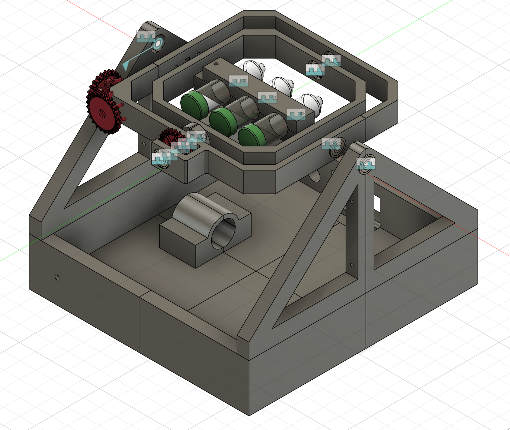
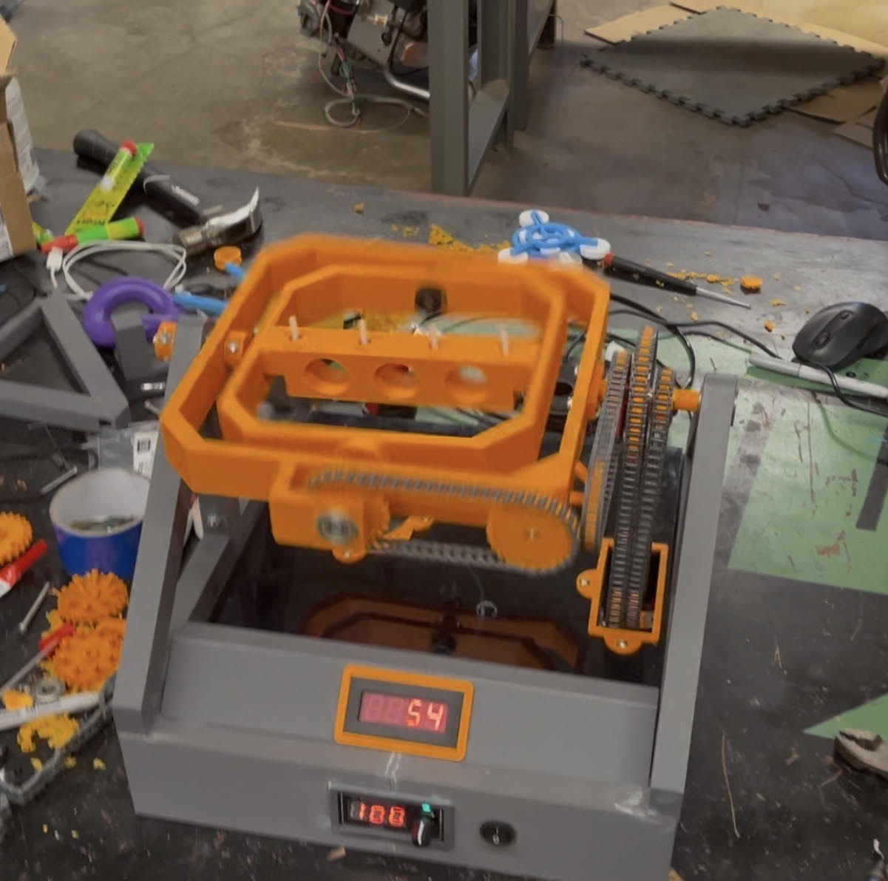

Role: Lead Mechanical Designer
Tools: Fusion 360, MATLAB, 3D printing additive Manufacturing
Design a rotating mechanical system capable of simulating microgravity conditions for biological research while maintaining balance and structural integrity. The entire assembly must cost less then 400$ total including prototyping. The final design must be able to run for two weeks strait without stopping.
Key constraints included rotational stability, manufacturability, and ease of assembly. Design iterations focused on mass balance and rotational symmetry, as well as longevity.
Design decisions were supported by mechanical reasoning and iterative testing. Future work would include increasing the effective lifespan of the system and making the entire system more professional.
The final system met functional requirements and was delivered for experimental use.
 